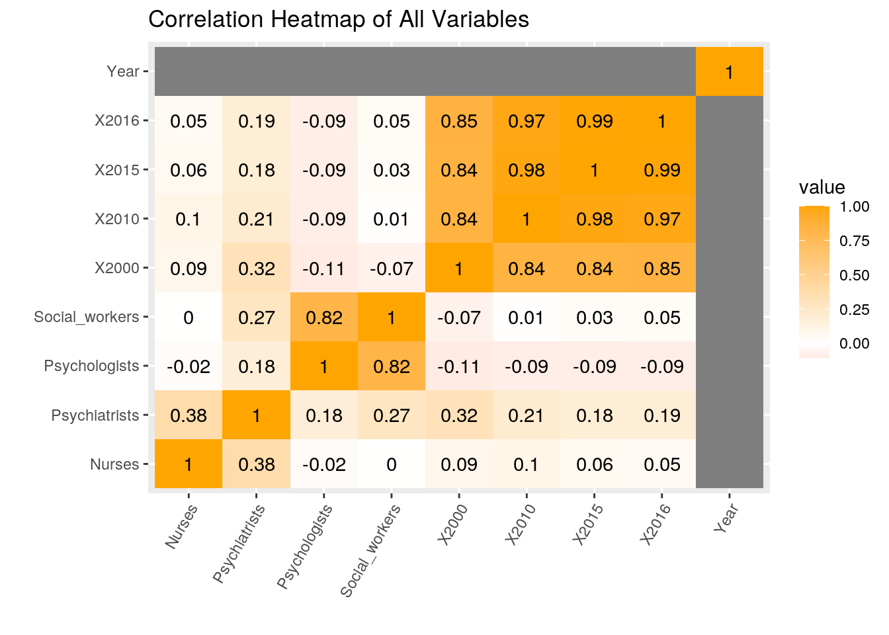
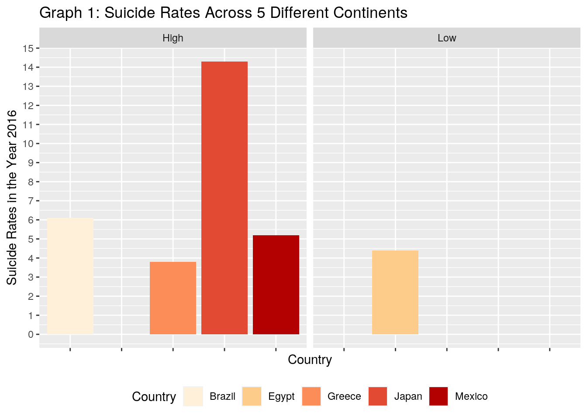
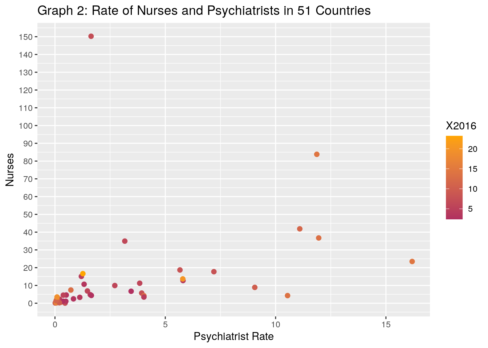
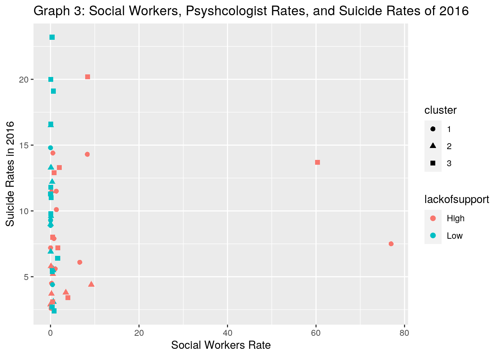

For this project, I chose to focus on mental health and the resources available in countries worldwide. The first dataset contains the suicide rates of 4 different years from each country. The suicide rates are for both genders combined and are age-standardized. The second dataset contains the amount of mental health specialitists present in the same countries during the year 2016. Each of the values in the second dataset, excluding the year, was per a population of 100000. I acquired both of these datasets from a website called Kaggle. As an individual who wants to be a psychiatrist, I was interested in seeing if there was a correlation between the amount of specialists (psychologists, nurses, and psychologists) to suicide rates. In particular, I wanted to see if the presence of specialists had decreased the suicide rates.
# Dataset1
suiciderates <- read.csv("suiciderates.csv")
# Dataset2
humanresources <- read.csv("Human Resources.csv")library("tidyverse")
library(tidyr)
library(dplyr)suiciderates1 <- suiciderates %>% select(Country:X2000) %>% na.omit()
untidysuicide <- suiciderates1 %>% pivot_wider(names_from = "Country",
values_from = "X2016")
tidysuicide <- untidysuicide %>% pivot_longer(cols = c(4:186),
names_to = "Country", values_to = "X2016") %>% na.omit()
tidysuicide## # A tibble: 183 x 5
## X2015 X2010 X2000 Country X2016
## <dbl> <dbl> <dbl> <chr> <dbl>
## 1 6.6 7.4 8.1 Afghanistan 6.4
## 2 5.3 7.7 5.8 Albania 5.6
## 3 3.4 3.5 4.7 Algeria 3.3
## 4 9.3 10.4 13.9 Angola 8.9
## 5 0.8 0.2 2.1 Antigua and Barbuda 0.5
## 6 8.7 8.6 9.5 Argentina 9.1
## 7 6 5.4 3.2 Armenia 5.7
## 8 12.2 11 12.2 Australia 11.7
## 9 11.5 12.2 16 Austria 11.4
## 10 2.7 3 2.4 Azerbaijan 2.6
## # … with 173 more rowshuman1 <- humanresources %>% select(Country:Psychologists)
untidyhuman <- human1 %>% pivot_wider(names_from = "Country",
values_from = "Psychiatrists")
tidyhuman <- untidyhuman %>% pivot_longer(cols = c(5:111), names_to = "Country",
values_to = "Psychiatrists") %>% na.omit()
tidyhuman## # A tibble: 53 x 6
## Year Nurses Social_workers Psychologists Country Psychiatrists
## <int> <dbl> <dbl> <dbl> <chr> <dbl>
## 1 2016 6.88 1.06 1.23 Albania 1.47
## 2 2016 0.66 0.022 0.179 Angola 0.057
## 3 2016 11.2 0.274 0.788 Armenia 3.84
## 4 2016 6.72 0.114 1.16 Azerbaijan 3.45
## 5 2016 34.9 6.61 12.4 Brazil 3.16
## 6 2016 15.1 0.239 5.03 Brunei Darussalam 1.20
## 7 2016 17.7 0.78 1.87 Bulgaria 7.20
## 8 2016 0.635 0.011 0.022 Burkina Faso 0.039
## 9 2016 0.5 0.02 0.02 Congo 0.08
## 10 2016 11.5 17.2 11.5 Cook Islands 5.73
## # … with 43 more rowsSince my datasets were originally tidy, I had to untidy them. I untidied both of my datastes using pivot_wider. For both datasets, I untidied them using a categorical (country) and a numeric (X2016 or Psychiatrists) variable . Following the untidying, I reordered my datasets using the function pivot_longer and omitted all NAs.
fulldata <- human1 %>% full_join(suiciderates1) %>% na.omit()
fulldata## Country Year Psychiatrists Nurses Social_workers Psychologists
## 2 Albania 2016 1.471 6.876 1.060 1.231
## 3 Angola 2016 0.057 0.660 0.022 0.179
## 6 Armenia 2016 3.840 11.245 0.274 0.788
## 7 Azerbaijan 2016 3.452 6.717 0.114 1.165
## 13 Brazil 2016 3.165 34.948 6.608 12.368
## 14 Brunei Darussalam 2016 1.197 15.088 0.239 5.029
## 15 Bulgaria 2016 7.203 17.736 0.780 1.867
## 16 Burkina Faso 2016 0.039 0.635 0.011 0.022
## 21 Congo 2016 0.080 0.500 0.020 0.020
## 23 Costa Rica 2016 3.931 5.699 76.957 142.018
## X2016 X2015 X2010 X2000
## 2 5.6 5.3 7.7 5.8
## 3 8.9 9.3 10.4 13.9
## 6 5.7 6.0 5.4 3.2
## 7 2.6 2.7 3.0 2.4
## 13 6.1 6.2 5.7 5.3
## 14 4.5 4.5 4.0 3.7
## 15 7.9 7.9 8.6 14.3
## 16 14.8 14.8 14.5 15.6
## 21 9.3 9.5 11.1 14.6
## 23 7.5 7.5 8.4 7.7
## [ reached 'max' / getOption("max.print") -- omitted 41 rows ]My two datasets were joined using the full_join function. I was interested in seeing all the numeric variables for each country. Some countries were dropped from the datatset since they did not have all variables. I was left to analyze data from 51 countries.
fulldata %>% filter(between(Psychiatrists, 1, 17))## Country Year Psychiatrists Nurses Social_workers Psychologists
## 1 Albania 2016 1.471 6.876 1.060 1.231
## 2 Armenia 2016 3.840 11.245 0.274 0.788
## 3 Azerbaijan 2016 3.452 6.717 0.114 1.165
## 4 Brazil 2016 3.165 34.948 6.608 12.368
## 5 Brunei Darussalam 2016 1.197 15.088 0.239 5.029
## 6 Bulgaria 2016 7.203 17.736 0.780 1.867
## 7 Costa Rica 2016 3.931 5.699 76.957 142.018
## 8 Croatia 2016 11.095 41.856 1.298 4.367
## 9 Cuba 2016 9.056 8.899 1.335 31.061
## 10 Egypt 2016 1.600 4.799 0.448 0.256
## X2016 X2015 X2010 X2000
## 1 5.6 5.3 7.7 5.8
## 2 5.7 6.0 5.4 3.2
## 3 2.6 2.7 3.0 2.4
## 4 6.1 6.2 5.7 5.3
## 5 4.5 4.5 4.0 3.7
## 6 7.9 7.9 8.6 14.3
## 7 7.5 7.5 8.4 7.7
## 8 11.5 12.3 13.3 16.8
## 9 10.1 10.0 11.4 15.8
## 10 4.4 4.2 4.0 3.9
## [ reached 'max' / getOption("max.print") -- omitted 15 rows ]Using the filter function, I narrowed down the countries that had a psychiatrist rate between 1 and 17. I observed that only 25 countries out of the 51 had a psychiatrist rate greater than 1. The cut-off of 17 was chosen since all psychiatrists rates were below that. I was curious to see how many countries had a low amount of psychologists. I condluded that 26 out of the 51 countries had a psychologist rating of below 1.
fulldata %>% select(Country, Nurses)## Country Nurses
## 2 Albania 6.876
## 3 Angola 0.660
## 6 Armenia 11.245
## 7 Azerbaijan 6.717
## 13 Brazil 34.948
## 14 Brunei Darussalam 15.088
## 15 Bulgaria 17.736
## 16 Burkina Faso 0.635
## 21 Congo 0.500
## 23 Costa Rica 5.699
## 25 Croatia 41.856
## 26 Cuba 8.899
## 28 Ecuador 0.056
## 29 Egypt 4.799
## 32 Estonia 23.484
## 33 Fiji 1.457
## 34 Gabon 0.518
## 38 Greece 12.748
## 40 Guatemala 1.071
## 44 Haiti 0.233
## 46 India 0.796
## 49 Japan 83.805
## 50 Jordan 3.297
## 55 Madagascar 0.314
## 58 Mexico 2.239
## 60 Mongolia 4.199
## 62 Morocco 2.451
## 65 Namibia 0.907
## 69 Niger 0.126
## 71 Panama 3.452
## 75 Qatar 9.933
## 76 Republic of Korea 13.662
## 77 Romania 18.710
## 78 Rwanda 1.376
## 81 Sao Tome and Principe 4.602
## 82 Saudi Arabia 10.660
## 83 Senegal 0.267
## 86 Slovenia 36.727
## 89 Suriname 16.630
## 91 Syrian Arab Republic 1.068
## 93 Thailand 7.418
## 94 Timor-Leste 1.370
## 95 Togo 0.270
## 97 Turkey 150.251
## 98 Uganda 2.242
## 100 United Arab Emirates 4.370
## 101 United States of America 4.283
## 104 Vanuatu 4.535
## 105 Yemen 0.323
## 106 Zambia 1.429
## [ reached 'max' / getOption("max.print") -- omitted 1 rows ]Using the select fucntion, I paired the country and nurse column. I observed the amount of nurses in each country and noted that Turkey had the highest amount of nurses per a population of 100,000. Turkey had a nurse rate of 150.251 which is significanatly larger than the US rate of 4.283.
fulldata %>% arrange(desc(X2016))## Country Year Psychiatrists Nurses Social_workers
## 1 Suriname 2016 1.265 16.630 0.362
## 2 Republic of Korea 2016 5.793 13.662 8.404
## 3 Uganda 2016 0.082 2.242 0.037
## 4 Zimbabwe 2016 0.095 3.486 0.634
## 5 Togo 2016 0.054 0.270 0.054
## 6 India 2016 0.292 0.796 0.065
## 7 Burkina Faso 2016 0.039 0.635 0.011
## 8 Estonia 2016 16.188 23.484 0.532
## 9 Japan 2016 11.867 83.805 8.328
## 10 United States of America 2016 10.542 4.283 60.338
## Psychologists X2016 X2015 X2010 X2000
## 1 0.542 23.2 24.4 28.3 26.4
## 2 1.591 20.2 21.4 28.1 14.2
## 3 0.037 20.0 20.2 21.8 22.8
## 4 0.057 19.1 18.9 20.6 21.7
## 5 0.404 16.6 16.3 16.9 17.2
## 6 0.069 16.5 16.7 17.1 18.7
## 7 0.022 14.8 14.8 14.5 15.6
## 8 6.460 14.4 13.3 14.9 25.4
## 9 3.037 14.3 15.1 19.0 18.8
## 10 29.864 13.7 13.3 11.8 10.1
## [ reached 'max' / getOption("max.print") -- omitted 41 rows ]Using the arrange function,I was able to see the descending suicide rates of 2016. Based on that table, the country Suriname had the highest suicide rate which was 23.2.
fulldata1 <- fulldata[!is.na(fulldata$Psychologists), ]
fulldata1$lackofsupport <- ifelse(fulldata1$Psychologists < median(fulldata1$Psychologists),
"Low", "High")
lackofsupport <- fulldata1$lackofsupport
fulldata1## Country Year Psychiatrists Nurses Social_workers Psychologists
## 2 Albania 2016 1.471 6.876 1.060 1.231
## 3 Angola 2016 0.057 0.660 0.022 0.179
## 6 Armenia 2016 3.840 11.245 0.274 0.788
## 7 Azerbaijan 2016 3.452 6.717 0.114 1.165
## 13 Brazil 2016 3.165 34.948 6.608 12.368
## 14 Brunei Darussalam 2016 1.197 15.088 0.239 5.029
## 15 Bulgaria 2016 7.203 17.736 0.780 1.867
## 16 Burkina Faso 2016 0.039 0.635 0.011 0.022
## 21 Congo 2016 0.080 0.500 0.020 0.020
## X2016 X2015 X2010 X2000 lackofsupport
## 2 5.6 5.3 7.7 5.8 High
## 3 8.9 9.3 10.4 13.9 Low
## 6 5.7 6.0 5.4 3.2 Low
## 7 2.6 2.7 3.0 2.4 High
## 13 6.1 6.2 5.7 5.3 High
## 14 4.5 4.5 4.0 3.7 High
## 15 7.9 7.9 8.6 14.3 High
## 16 14.8 14.8 14.5 15.6 Low
## 21 9.3 9.5 11.1 14.6 Low
## [ reached 'max' / getOption("max.print") -- omitted 42 rows ]fulldata1 %>% group_by(lackofsupport)## # A tibble: 51 x 11
## # Groups: lackofsupport [2]
## Country Year Psychiatrists Nurses Social_workers Psychologists X2016 X2015
## <fct> <int> <dbl> <dbl> <dbl> <dbl> <dbl> <dbl>
## 1 Albania 2016 1.47 6.88 1.06 1.23 5.6 5.3
## 2 Angola 2016 0.057 0.66 0.022 0.179 8.9 9.3
## 3 Armenia 2016 3.84 11.2 0.274 0.788 5.7 6
## 4 Azerba… 2016 3.45 6.72 0.114 1.16 2.6 2.7
## 5 Brazil 2016 3.16 34.9 6.61 12.4 6.1 6.2
## 6 Brunei… 2016 1.20 15.1 0.239 5.03 4.5 4.5
## 7 Bulgar… 2016 7.20 17.7 0.78 1.87 7.9 7.9
## 8 Burkin… 2016 0.039 0.635 0.011 0.022 14.8 14.8
## 9 Congo 2016 0.08 0.5 0.02 0.02 9.3 9.5
## 10 Costa … 2016 3.93 5.70 77.0 142. 7.5 7.5
## # … with 41 more rows, and 3 more variables: X2010 <dbl>, X2000 <dbl>,
## # lackofsupport <chr>I created a new categorical variable called lackofsupport and used the group_by function to observe which countries had the lowest presence of psychologists.I chose the psychologist variable over other variables since psychologsists are the most common specialists to be visited for mental health concerns. Nurses and social workers are prominently visited for other reasons. Many countries that had a low presence of pscyhologists in 2016 had high suicide rates in that same year. For example, Uganda had a low psychologist rate in 2016 and the suicide rate in 2016 was 20.0. Azerbijan had a high psychologist rate of 1.165 and a suicide rate of 2.6 in the same exact year. There are exceptions to the aforementioned trend. One exception is Egypt. Egypt had a low psychologist rate of 0.256 and a low suicide rate of 4.4 in the exact same year. These exceptions indicate that there are other factors to be considered when assessing the cause of suicide and the effectiveness of mental health specialists. In regard to Egypt, since it is an extremely populated country, the psychologist rate might be low in comparison to its dense population.
fulldata2 <- fulldata1 %>% mutate(averaage = Psychologists/Psychiatrists)
fulldata2## Country Year Psychiatrists Nurses Social_workers Psychologists
## 1 Albania 2016 1.471 6.876 1.060 1.231
## 2 Angola 2016 0.057 0.660 0.022 0.179
## 3 Armenia 2016 3.840 11.245 0.274 0.788
## 4 Azerbaijan 2016 3.452 6.717 0.114 1.165
## 5 Brazil 2016 3.165 34.948 6.608 12.368
## 6 Brunei Darussalam 2016 1.197 15.088 0.239 5.029
## 7 Bulgaria 2016 7.203 17.736 0.780 1.867
## 8 Burkina Faso 2016 0.039 0.635 0.011 0.022
## X2016 X2015 X2010 X2000 lackofsupport averaage
## 1 5.6 5.3 7.7 5.8 High 0.8368457
## 2 8.9 9.3 10.4 13.9 Low 3.1403509
## 3 5.7 6.0 5.4 3.2 Low 0.2052083
## 4 2.6 2.7 3.0 2.4 High 0.3374855
## 5 6.1 6.2 5.7 5.3 High 3.9077409
## 6 4.5 4.5 4.0 3.7 High 4.2013367
## 7 7.9 7.9 8.6 14.3 High 0.2591976
## 8 14.8 14.8 14.5 15.6 Low 0.5641026
## [ reached 'max' / getOption("max.print") -- omitted 43 rows ]Using the mutate function, I created an additional column which divides the psychologist rate by the psychiatrist rate for each country. I wanted to see how many psyshologists there were in comparison to psychiatrists. Surprisingly, 23 out of the 51 countries had more psychiatrists than psycholgists. I expected there to be more psychologists since psychiatrists are typically visited only after the psychologist refers the patient to them. Psychiatrists are also only visited for their ability to perscribe medication. The high presence of psychiatrists suggests that there are more severe mental illnesses than expected. Severe mental illnesses require medication more often mild illnesses that can be handled by a psychologist.
summary <- fulldata %>% summarize(mean_suicide2010 = mean(X2010,
na.rm = T), n_country = n_distinct(Country))
summary## mean_suicide2010 n_country
## 1 10.13725 51This summary shows the mean suicide rate of 2010 which was 10.14 and the amount of unique countries in the dataset is 51.
fulldata1 %>% summary()## Country Year Psychiatrists Nurses
## Albania : 1 Min. :2016 Min. : 0.0140 Min. : 0.0560
## Angola : 1 1st Qu.:2016 1st Qu.: 0.2005 1st Qu.: 0.9875
## Armenia : 1 Median :2016 Median : 0.8390 Median : 4.1990
## Azerbaijan : 1 Mean :2016 Mean : 2.7032 Mean : 11.5769
## Brazil : 1 3rd Qu.:2016 3rd Qu.: 3.8855 3rd Qu.: 10.9525
## Brunei Darussalam: 1 Max. :2016 Max. :16.1880 Max. :150.2510
## (Other) :45
## Social_workers Psychologists X2016 X2015
## Min. : 0.006 Min. : 0.0190 Min. : 2.40 Min. : 2.400
## 1st Qu.: 0.084 1st Qu.: 0.3215 1st Qu.: 5.30 1st Qu.: 5.400
## Median : 0.378 Median : 1.1650 Median : 8.00 Median : 9.100
## Mean : 3.852 Mean : 6.7897 Mean : 9.21 Mean : 9.406
## 3rd Qu.: 1.179 3rd Qu.: 3.2635 3rd Qu.:12.55 3rd Qu.:12.700
## Max. :76.957 Max. :142.0180 Max. :23.20 Max. :24.400
##
## X2010 X2000 lackofsupport
## Min. : 2.40 Min. : 1.80 Length:51
## 1st Qu.: 5.15 1st Qu.: 4.85 Class :character
## Median : 9.20 Median : 9.10 Mode :character
## Mean :10.14 Mean :11.19
## 3rd Qu.:13.20 3rd Qu.:15.70
## Max. :28.30 Max. :26.40
## fulldata1 %>% group_by(Country, lackofsupport) %>% summarize(median(X2016))## # A tibble: 51 x 3
## # Groups: Country [51]
## Country lackofsupport `median(X2016)`
## <fct> <chr> <dbl>
## 1 Albania High 5.6
## 2 Angola Low 8.9
## 3 Armenia Low 5.7
## 4 Azerbaijan High 2.6
## 5 Brazil High 6.1
## 6 Brunei Darussalam High 4.5
## 7 Bulgaria High 7.9
## 8 Burkina Faso Low 14.8
## 9 Congo Low 9.3
## 10 Costa Rica High 7.5
## # … with 41 more rowsfulldata1 %>% group_by(Country, lackofsupport, Nurses) %>% summarize(mean(Psychiatrists))## # A tibble: 51 x 4
## # Groups: Country, lackofsupport [51]
## Country lackofsupport Nurses `mean(Psychiatrists)`
## <fct> <chr> <dbl> <dbl>
## 1 Albania High 6.88 1.47
## 2 Angola Low 0.66 0.057
## 3 Armenia Low 11.2 3.84
## 4 Azerbaijan High 6.72 3.45
## 5 Brazil High 34.9 3.16
## 6 Brunei Darussalam High 15.1 1.20
## 7 Bulgaria High 17.7 7.20
## 8 Burkina Faso Low 0.635 0.039
## 9 Congo Low 0.5 0.08
## 10 Costa Rica High 5.70 3.93
## # … with 41 more rowsfulldata1 %>% summarize(mean(Psychologists), mean(Psychiatrists))## mean(Psychologists) mean(Psychiatrists)
## 1 6.789686 2.703216fulldata1 %>% summarize(sd(Psychologists), sd(Psychiatrists))## sd(Psychologists) sd(Psychiatrists)
## 1 21.15927 3.876623fulldata1 %>% summarize(max(Psychologists), max(Psychiatrists))## max(Psychologists) max(Psychiatrists)
## 1 142.018 16.188fulldata1 %>% summarize(max(Social_workers), max(Nurses))## max(Social_workers) max(Nurses)
## 1 76.957 150.251fulldata1 %>% summarize(sd(X2015), sd(X2016))## sd(X2015) sd(X2016)
## 1 5.334769 5.200317fulldata1 %>% summarize(sd(Social_workers), sd(Nurses))## sd(Social_workers) sd(Nurses)
## 1 13.50679 24.46923fulldata1 %>% summarize(n_distinct(Psychologists), n_distinct(Psychiatrists))## n_distinct(Psychologists) n_distinct(Psychiatrists)
## 1 49 50fulldata1 %>% summarize(mean(X2000), mean(X2010))## mean(X2000) mean(X2010)
## 1 11.1902 10.13725This fulldata1 summary shows all the different numerical variables and their corresponding minimum, 1st quratile, median, mean, 3rd quartile, and maximum values. Ten summary statistic were coded: First Code - The first code was grouped by two categorical variables and the median suicide rate for 2016 was compared. I was able to see more clearly the effect that psychologists have on the suicide rates. There was no clear trend identifed. Some countries like Burkina Faso had an expected trend of a higher suicide rate when there was a low presence of psychologist. There were other countries that had similar suicide rates, but were high and low in the lackofsupport column. Second Code - The second code was grouped by lackofsupport and nurses and the mean psychiatrist rates were observed. I was interested to see if there were countries that had three high rates of specialities. I observed that countries like Bulgaria, Croatia, and Estonia had high rates of all specialties. This was interesting to note since all three countries are located in Eastern Europe. This prompted me to note that healthcare must be valued there since there is a surplus amount of individuals trained to help their community. Third Code - The third code compared the mean of pscyhologist and pscyhiatrist rate. The mean for psychologists was almost 3 times greater than psychiatrists, even though almost half of the countries observed had a greater psychiatrist rate than pscyhologist. The mean pscyhologist rate was 6.78 and the mean pscyhiatrist rate was 2.70. Fourth Code - The fourth code compared the standard deviations of pscyhologists and psychiatrists. The standard deviation for pscyhologists was 21.15, suggesting that there is a wide range of psychologist rates acorss the 51 countries. The standard deviation for pscyhiatrists is 3.88, suggesting that the range for the psychiatrist rate is much more narrow. Fifth Code - The fifth code compared the maximum values of psychiatrist and psychologist rates. The maximum for pscyhologists was 142.018 and the maximum for pscyhiatrists was 16.188. Sixth Code - The sixth code tells me the maximum number of social workers and the maximum number of nurses. Nurses were almost double the amount of social workers. Seventh Code - This compared the standard deviation of suicide rates from the year 2015 and 2016. The difference of standard deviations was very slim. It was 0.13 which makes sense since these two values were taken a year apart and the suicide rates would not have changed drastically. Eighth Code - This compared the standard devation of social workers and nurses. The standard deviation for rate of social workers was 13.506 and the standard deviation for the rate nurses was 24.46, suggesting that the range of the nurses rate is wider than the range for the social workers. Ninth Code - The sixth code tells me that there are 49 unique psychologist rates and 50 unique psychiatrist rates in the dataset. Tenth Code - This code compared the mean suicide rate in 2000 and the mean suicide rate in 2010. This was the most shocking statistic since the suicide rate decreased by only 1.1. I expected that over a decade and with the increased awareness of mental health, it would have been lowered more.
library("ggplot2")
fulldata1 %>% select_if(is.numeric) %>% cor %>% as.data.frame %>%
rownames_to_column %>% pivot_longer(-1) %>% ggplot(aes(rowname,
name, fill = value)) + geom_tile() + ggtitle("Correlation Heatmap of All Variables") +
geom_text(aes(label = round(value, 2))) + xlab("") + ylab("") +
scale_fill_gradient2(low = "red", high = "orange") + theme(axis.text.x = element_text(angle = 60,
hjust = 1))
This correlation heatmap depicts that many of my variables have weak correlations. One strong correlations is between social workers and psychologists. The correlation between these two specialists is 0.82. This means that as the abundance of social workers increase, the abundance of psychologists also increase. There are strong trends between the different years that suicide rates were measured. This is expected as there was no drastic change between the year 2000 to the year 2016 in any of the countries. I expected there is be some strong correlations between psychologists and suicide rates, but many are close to 0. They are negative correlations which signifies that sucide rates decrease as the abundance of psychologists increase.
fulldata1 %>% filter(Country == "Brazil" | Country == "Egypt" |
Country == "Greece" | Country == "Japan" | Country == "Mexico") %>%
ggplot(aes(x = Country, y = X2016, fill = Country)) + geom_bar(stat = "summary",
fun.y = "mean") + facet_wrap(~lackofsupport) + ggtitle("Graph 1: Suicide Rates Across 5 Different Continents") +
theme(axis.text.x = element_blank(), legend.position = "bottom") +
scale_fill_brewer(palette = "OrRd") + scale_y_continuous(breaks = seq(0,
20, 1)) + ylab("Suicide Rates in the Year 2016") In this graph, I chose 5 different countries that were each in a different continent. I intended to showcase all 7 continents, but my dataset only repersented 5. I wanted to observe the suicide rates in 2016 and their psychologist rates simultaneously. Despite the greater than median rate of psychologists in 2016, Japan had the highest rate of suicide in 2016 out of all the countries depicted. Furthermore, despite the greater or lower than median rate of psychologists, the suicide rates for the other 4 countries were relatively the same. The country that was the most different was Greece who had the lowest suicide rates and a greater than the median psychologist rate. This plot and prior calculations has made me question the effectiveness of specialists and the importance in accounting for other variables when examining the reason why an individual is sucidial and why they commit suicide. Not many of the statistics have clear trends. This is the most evident when observing the correlation heatmap above.
fulldata1 %>% ggplot(aes(x = Psychiatrists, y = Nurses)) + geom_point(size = 2,
aes(color = X2016)) + scale_color_gradient(low = "maroon",
high = "orange") + ggtitle("Graph 2: Rate of Nurses and Psychiatrists in 51 Countries") +
scale_y_continuous(breaks = seq(0, 150, 10)) + scale_x_continuous(breaks = seq(0,
20, 5)) + xlab("Psychiatrist Rate") In this graph, the psychiatrist and nurses rates for all 51 countries in the dataset are mapped against each other. The suicide rates for the year 2016 are also mapped and the color changes based on the rate. At first glance, one notices the cluster of datapoints in the bottom left corner. Many of the countries have a psychiatrist rate below 2.5 and a nurse rate below 10. Comparing the suicide rates between those datapoints that have similar psychologist and psychiatrist rates, one notices that there is a great range of suicide rates. There is a datapoint that seems that the suicide rate is close to 20 and there is a datapoint that is right under that that has a suicide rate of below 5. This prompts me to again question the presence of health specialists and if they are as useful as one would hope. Many other factors should be taken in account to understand one's mental health and this graph has brought my attention to this.
library(cluster)
pam1 <- fulldata1 %>% pam(k = 3)
pam1## Medoids:
## ID Country Year Psychiatrists Nurses Social_workers Psychologists X2016
## 15 7 15 2016 7.203 17.736 0.780 1.867 7.9
## 55 24 55 2016 0.058 0.314 0.050 0.062 6.9
## 93 41 93 2016 0.721 7.418 0.836 1.749 12.9
## X2015 X2010 X2000 lackofsupport
## 15 7.9 8.6 14.3 NA
## 55 7.0 7.7 8.5 NA
## 93 13.1 13.0 15.9 NA
## Clustering vector:
## 2 3 6 7 13 14 15 16 21 23 25 26 28 29 32 33 34 38 40 44
## 1 1 1 1 1 1 1 1 1 1 1 1 1 1 1 2 2 2 2 2
## 46 49 50 55 58 60 62 65 69 71 75 76 77 78 81 82 83 86 89 91
## 2 1 2 2 2 2 2 2 2 2 2 3 3 3 3 3 3 3 3 3
## 93 94 95 97 98 100 101 104 105 106 107
## 3 3 3 3 3 3 3 3 3 3 3
## Objective function:
## build swap
## 27.97239 27.97239
##
## Available components:
## [1] "medoids" "id.med" "clustering" "objective" "isolation"
## [6] "clusinfo" "silinfo" "diss" "call" "data"pamcluster <- fulldata1 %>% mutate(cluster = as.factor(pam1$clustering))
pamcluster %>% ggplot(aes(Social_workers, X2016, color = lackofsupport,
shape = cluster)) + geom_point(size = 2) + ggtitle("Graph 3: Social Workers, Psyshcologist Rates, and Suicide Rates of 2016") +
xlab("Social Workers Rate") + ylab("Suicide Rates in 2016") In this cluster graph, the relationship between two numeric variables and one categorical variable based on a third numeric variable was observed. The greatest area of concentration is at the 0.0 to 5.0 rate for social workers. Within this area, there are a wide range of suicide rates. We can conclude only one plausiable conclusion which is the abundance of social workers per 100,000 is very low and is unable to have a signifncant affect on the population. From this graph, you cannot conclude that the social workers are ineffective. There has to be more data involved. Also, based on the colors of the cluster, one can conclude that the majority of countries who have a low lackofsupport which means lower than the median rate of psychologists, have higher suicide rates. This is depicted by the teal datapoints that have a greater amount than the orange datapoints in the upper left of the graph. This graph contains one of the more evident trends throughout this project.
pam2 <- fulldata1 %>% select(-lackofsupport, -Country) %>% pam(3)
pam2## Medoids:
## ID Year Psychiatrists Nurses Social_workers Psychologists X2016 X2015 X2010
## 29 14 2016 1.600 4.799 0.448 0.256 4.4 4.2 4.0
## 93 41 2016 0.721 7.418 0.836 1.749 12.9 13.1 13.0
## 23 10 2016 3.931 5.699 76.957 142.018 7.5 7.5 8.4
## X2000
## 29 3.9
## 93 15.9
## 23 7.7
## Clustering vector:
## 2 3 6 7 13 14 15 16 21 23 25 26 28 29 32 33 34 38 40 44
## 1 2 1 1 1 1 2 2 2 3 2 2 1 1 2 1 1 1 1 2
## 46 49 50 55 58 60 62 65 69 71 75 76 77 78 81 82 83 86 89 91
## 2 2 1 1 1 2 1 2 1 1 1 2 2 2 1 1 2 2 2 1
## 93 94 95 97 98 100 101 104 105 106 107
## 2 1 2 2 2 1 2 1 2 2 2
## Objective function:
## build swap
## 17.10792 16.88768
##
## Available components:
## [1] "medoids" "id.med" "clustering" "objective" "isolation"
## [6] "clusinfo" "silinfo" "diss" "call" "data"final <- fulldata1 %>% mutate(cluster = as.factor(pam2$clustering))
final2 <- final %>% group_by(lackofsupport) %>% count(cluster) %>%
arrange(desc(n)) %>% pivot_wider(names_from = "cluster",
values_from = "n", values_fill = list(n = 0))
final2## # A tibble: 2 x 4
## # Groups: lackofsupport [2]
## lackofsupport `2` `1` `3`
## <chr> <int> <int> <int>
## 1 Low 14 11 0
## 2 High 12 13 1library(plotly)
final %>% plot_ly(x = ~Psychiatrists, y = ~X2016, z = ~Psychologists,
color = ~cluster, type = "scatter3d", mode = "markers") %>%
layout(autosize = F, width = 900, height = 400)